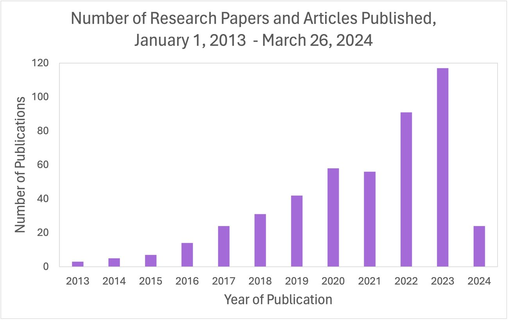

The 12-month cash flow template every small business needs
A small business can be profitable and still get into trouble because of the gap between doing the work and getting paid. The spreadsheet that shows that gap coming, a year in advance.
A small business can be profitable and still get into trouble because of the gap between doing the work and getting paid for it. Here's the spreadsheet that shows that gap coming: a year in advance.

Your profit and loss statement is lying to you

Not on purpose. The P&L answers the question "is this business profitable?", which sounds like the question you care about. It isn't.
The question that actually decides whether you make rent is: "can I pay what's due in March, in March?"
Those are different questions because of timing. You buy materials in January. You invoice in February, on 30-day terms. The client pays in March, sometimes April. On paper — P&L paper — everything is fine in January. In your bank account, January is the month you're $4,000 short.
Contractors know this pain best: money goes out for months before it comes in. Agencies feel it every time a retainer pays net-30. Retail feels it seasonally. The pattern is universal, and the P&L is structurally blind to it.
What a 12-month cashflow forecast actually does

A cashflow forecast is embarrassingly simple, which makes it an easy thing to keep meaning to do. It's a grid:
- Months across the top, 12 of them, starting now.
- Money in, by category, per month.
- Money out, by category, per month.
- The only row that matters: projected ending balance — your starting cash, plus each month's in-minus-out, stacked forward.
That last row is the alarm. When a month's balance dips below zero — or below whatever buffer lets you sleep — the cell turns red. Not in that month. Now, twelve months early, while there's still time to do something about it.
Build one yourself in ten minutes
Invoices, clients, expenses, quotes and the 12-month forecast — linked and ready for your numbers. One-time price, lifetime updates.
Command Center, $49 → Start free
If you want to appreciate what the template does, build the skeleton once:
1. New sheet. Row 1: your starting cash balance. Row 2: twelve month labels starting this month (=EDATE(starting_month, 0), =EDATE(…, 1), …).
2. A dozen rows for income categories; a dozen-plus for expenses. Leave blanks you don't need.
3. Totals: =SUM() down each month's column for income, then expenses.
4. Net row: income total minus expense total.
5. Ending balance row: first month is =starting_cash + net_1. Every month after: =previous_balance + net_this_month.
6. Select the ending balance row → Conditional Formatting → "less than 0" → red fill. That's the alarm.
That's the whole machine. Six steps, and the skeleton is built.
The three ways forecasts lie (and the fixes)
Mistake 1: forgetting tax. The most common way a forecast deceives its owner. Set aside a real percentage as an expense line every month — VAT/GST/sales tax doesn't care that you're forecasting.
Mistake 2: best-case income. People forecast what they hope will happen. Forecast what's contracted or near-certain for month 1–3, and a conservative case beyond that. If the conservative case never goes red, your downside is covered — then upside is just upside.
Mistake 3: entering it once. A forecast from three months ago is a random number generator with formatting. The fix is boring and effective: 15 minutes on the first of every month, on a calendar reminder. Replace last month's guesses with what actually happened, nudge the next 11, read the red row, close the file.
What you get from those 15 minutes a month
- Chase invoices before the crunch, not after. If March is red, February's overdue list is where you go.
- Time your spending. That equipment purchase, that hire, that marketing push — the ending-balance row tells you which month can actually carry it.
- Negotiate from strength. Knowing you have a cash trough coming is leverage with suppliers (shift terms) and clients (deposit up front). Not knowing is what forces panicked discounts.
- Sleep. This is the underrated one. The background hum of "are we okay?" has an answer now, in writing.
The shortcut
Everything above — the categories, the formulas, the red-flag formatting, a chart, and a plain-English guide — is in the 12-Month Cashflow Forecaster, which you can download free here. Enter your numbers, and it works.
When you're ready for the same numbers to run your whole operation — invoicing with overdue tracking, expense log, quote calculator, printable client invoices, and the forecast pulling your actuals in automatically — that's the Small Business Command Center ($49, one-time, no subscription), on the same page.
Either way: build the grid, keep the 15-minute habit, and stop finding out about cash problems in the month they happen.
The templates work in Excel and Google Sheets. This is planning assistance, not financial advice.
Invoices, expenses, clients, quotes and a 12-month cashflow forecast — linked in one workbook. One-time price, lifetime updates.
Buy the Command Center — $49 → Start with the free forecaster